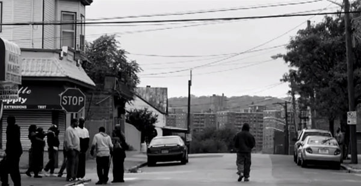

-
undun: The Roots reclaim hip-hop for the corner
by J.A. Myerson December 14, 2011
This nigga raps with a razor, keep it under my tongue
The school drop-out, never liked the shit from day one
Cause life ain’t shit but stress, fake niggas and crab stunts
So I guzzle my Hennessy while pulling on mad blunts.That’s Nas on 1994’s “Represent”. Here’s the Notorious B.I.G. on “Things Done Changed”, also from 1994:
Talk slick, you get your neck slit quick
Cause real street niggas ain’t having that shit
Toting Tecs for rep, smoking blunts in the project hallways
Shooting dice all day.And from that same year, 2Pac on “Cradle to the Grave”:
See, the doctor tried to smack me, but I smacked him back
My first words was ‘Thug for life’ and ‘Papa, pass the mac’
I’m busting on these motherfuckers baling
Listen, you can hear my mini fourteen calling.I was a child when I first heard these lyrics, and the onset of a quenchless thirst for more was immediate, but met with impediment. I remember well the constant denigration that hip-hop was violent, nihilistic, ugly, bad. Many took objection to its vulgarity and fascination with deplorable fixtures of life in American ghettos in the waning years of crack and AIDS epidemics that absolutely ravished the urban poor — prison, guns, drugs, gangs, theft, fighting, police brutality, etc. C. Delores Tucker and Tipper Gore led the charge on behalf of a country that will tolerate incredible violence, so long as it is perpetrated by the military and not the poor.
What they couldn’t see was that these verses weren’t polemics, doctrine that a new generation of rap fans should be violent, undignified and apathetic; they were a startling primary document, an anthropological case study in the poetry that emerges from a society in tatters. The mid-1990’s were the final years of the period during which hip-hop was folk music: the music made by folks for folks about folks in the language of the folks. In the late-90’s, that changed.
Along with Bad Boy Records’ 1997 releases came the influence of Bad Boy’s unprecedented emphasis on material wealth, as in “Mo Money, Mo Problems” and “It’s All About The Benjamins”, the songs that dominated the charts so powerfully that they forced a shift in how people thought about making hits. There was always a materialist strain in hip-hop — think Slick Rick’s chains and Big Daddy Kane’s rings — but until now wealth wasn’t a subject in which artists routinely engaged with any depth of exploration over an entire song, or an entire album, or an entire slate of releases, or the creation of an entire ethos.
Around the same time, two New Orleans-based record labels grew in popularity, Master P’s No Limit Records and the Cash Money millionaires. Lil’ Wayne emerged from the latter. The album covers of both labels were designed by Pen & Pixel, a Houston-based graphics firm whose distinct style was aptly described thusly:
Even before the word was in common usage, Pen and Pixel’s covers defined bling: boxy letters that resembled gold studded with diamonds; tricked-out Rolls-Royces, Bentleys and Lexuses; columned plantation-style mansions; platinum dollar signs; and jewelry-draped rappers smirking while talking on cell phones, often with scantily clad hotties looking on lustily.
It wasn’t long after this that the major record companies caught on to the market potential of what was clearly no longer a fad but an industry whose financial potential had to be extracted from it. Rap labels went from being independent ventures, as in Bad Boy and Death Row, sure, but also Rawkus and Loud, Tommy Boy and the others. Nowadays, every rap song on the radio comes from a record label owned by a massive media conglomerate. Bad Boy and Maybach Music Group are owned by Warner Music Group, which is owned by Access Industries. Roc-A-Fella is owned by Def Jam, which, like Young Money Entertainment, is owned by Universal Music Group, which is owned by Vivendi. Rap is big, big money. Like, not the several million dollars Puffy was throwing around in ’97, but international media conglomerate money. That’s 1% kind of money.
Hip hop is no longer folk music. It isn’t being made, by and large, as a discussion of the life from which the rappers have come — poverty, harassment, struggle — but as a discussion of the life to which they’ve come — luxury, access, fame. The mega-corporations who own rap labels now are the same ones who own the radio stations and the television networks and craft demand. So the content of the music is focused on upholding the supremacy of capital rather than questioning the necessity of privation.
Look at me now
Look at me now
Look at me now
I’m getting paper.That’s Chris Brown from 2011’s “Look At Me Now”. Here’s the same year’s Wokka Flokka Flame’s “No Hands”:
I’mma sip Muscato
And you gon’ loose them pants
And I’mma throw this money
While you do it with no hands.In this mode, there is no room for poetry. Because alongside Nas’ razors and blunts, he also said:
I need a new nigga for this black cloud to follow
Cause while it’s over me, it’s too dark to see tomorrow.And Big said:
My momma got cancer in her breast
Don’t ask me why I’m motherfucking stressed.I took this impossibility of poetry to be what people meant when talking about how hip-hop was “dead.” One could see their point. Even Kanye West’s My Beautiful Dark Twisted Fantasy, the most recent hip-hop mega-release to exhibit genre-challenging artistic gumption, is an album foremost about the neuroses of an extremely wealthy, extremely famous man.
But now, from The Roots, undun has come along. It is their thirteenth release and their first concept album. undun doesn’t exactly tell the story of Redford Stephens, but it Scotch-tapes a series of Polaroids from his life to a wall that is unsightly with structural dampness.
The exhibition begins with “Sleep”, a song whose skeletal clicks and creaks let one know even before Black Thought does that the sleep in question is eternal.
Illegal activity controls my black symphony
Orchestrated like it happened incidentally
Oh — there I go, from a man to a memory
Damn — I wonder if my fam will remember me.Black Thought hasn’t been exactly playful since the hard-bop mayhem of Do You Want More?!!!??! But in the intervening serious phase he has never been as grave — or as lean — as he is on undun.
This is not to say that undun lacks levity entirely. The “gentlemanly gangster steez” of “Kool On”, with its wailing, church-quartet D.J. Rogers sample, gives Redford and his boys a moment to share a laugh over the prosperity that their life of crime has generated. And the 2-minute break at the end of “Make My” pushes past playfulness into bliss territory, its ever-changing Moog bassline stepping right up to saturated strings, lush woodwinds and ethereal choir-voices, and performing a very complicated hand-shake with them.
But in no sense does the album glorify or even romanticize the iniquities and dangers of the ghetto. Even in its lighter moments, the album keeps looking over its shoulder and seeing imprisonment and death mere feet back. Take Black Thought’s assessment on “Kool On”: “The minute before the storm hits is what I’m calm like.” And there is something almost Euripidean about the moribund inevitability of undun’s story: Man emerges into a world of squalor; man robs people and deals drugs to escape the squalor; the jails and bullets of the world confront man at every turn; man returns to a world of squalor in death. “Tell me,” Stevie Wonder implored in 1976. “Would you be happy in Village Ghetto Land?”
Even early in the story (late in the album), a despair governs the atmosphere. Redford is “facedown in the ocean, and no one’s in the lighthouse” on the song “Lighthouse”, and “referred to the owner’s manual full of loners, full of all the homeless throw-aways and the stoners, soldiers of the streets with 8th grade diplomas and a world of weight on their shoulders as a bonus” on “Tip The Scale”. Nothing’s wasted: not in Redford’s life, not in Black Thought’s cadence.
The depth of Black Thought’s development of Redford is startling in the way a Willem Dafoe performance is. He gives the impression he could explore the thoughts and actions of his role for an extravagant double-LP, but instead shoots hard toward the opposite tack, frequently foregoing more than one verse in a song to give microphone time to Roots affiliates Dice Raw and Greg P.O.R.N., and to Little Brother’s inimitably witty Phonte, whose verse on “One Time” includes his proclamation that he is “feared in all streets, so if you ever see me out in y’all streets, find another one to occupy.”
No, the Root who gets to have all the fun on undun is ?uestlove. The man wears many hats atop his iconic afro. Apart from indulging his right-minded impulse to make every drum track as punchy as possible, ?uestlove occasionally plays the impish trickster, as his recent unappreciated pwnership of Michelle Bachmann goes to show. The man refuses to abjure his fascination with musical styles that lie not adjacent to but a few leaps apart from the world of hip-hop — virtually every hook on the album sounds as though it could come from Pitchfork’s favorite indie record of the month. ?uestlove’s frequent ventures into the worlds of jazz and even classical music are evident on the album as well, its rhapsodic wanderlust making stops along the way at the revivalist organ of “The Other Side” and the entropic drum/piano streetfight between ?uestlove and D.D. Jackson during the suite at the end of the album.
That suite begins with Sufjan Stevens’ simulacrum of his own “Redford (For Yia Yia & Pappou)” and ends with a chamber string ensemble’s lament for the dead-or-dying Redford, a lament which is interrupted by the album’s closing punctuation, a hand brought down heavily on a piano’s low notes. This is not how rap albums end, not in the era of T.I., not in the era of Gang Starr, not in the era of Stetsasonic, not in the era of The Funky 4+1.
There is a sense in which the factor that allows The Roots to delve so determinedly into the artistic exploration of sub-proletarian destitution is the comfortable niche they have carved out for themselves in the world of the corporate media. After a terrifyingly long phase of non-stop touring, The Roots have settled down to be the house band for Jimmy Fallon’s late-night NBC outfit. Said ?uestlove to Rolling Stone, “If our only job were being the Roots, I don’t know if we would be bold enough to make [undun].”
A dependable subsidy from an international media conglomerate can be a liberating thing, The Roots having produced three LPs in the last year and a half.
This one is short. Brief glimpses into the perils and necessities and anxieties of impoverished city life, some transcendent moments of reflection, and the whole thing is over in 40 minutes. This means that Redford’s whole life is 40 minutes, which is how it feels when young people die. Consider undun a 40-minute reminder, to the world of rap music as much as to anyone else, that when the recession ends and austerity relents, the ghetto has nothing to look forward to but more recession and austerity.
Here’s Black Thought’s injunction on “Stomp”:
Listen: was this a matter of flesh and blood? Yes it was
Does it matter who win and lose? Yes it does
It ain’t about the most blessed love
When you return to the essence, what is it back to the essence of?